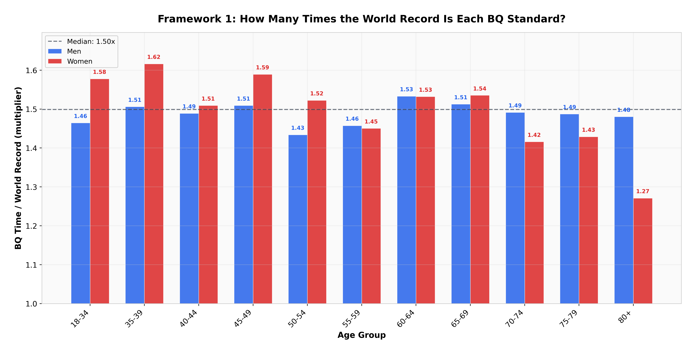
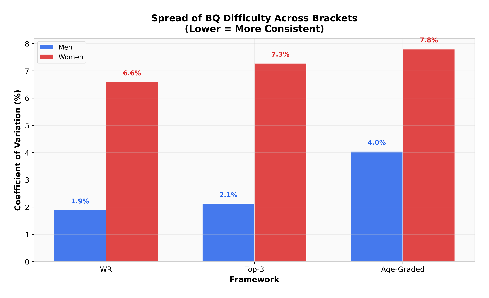
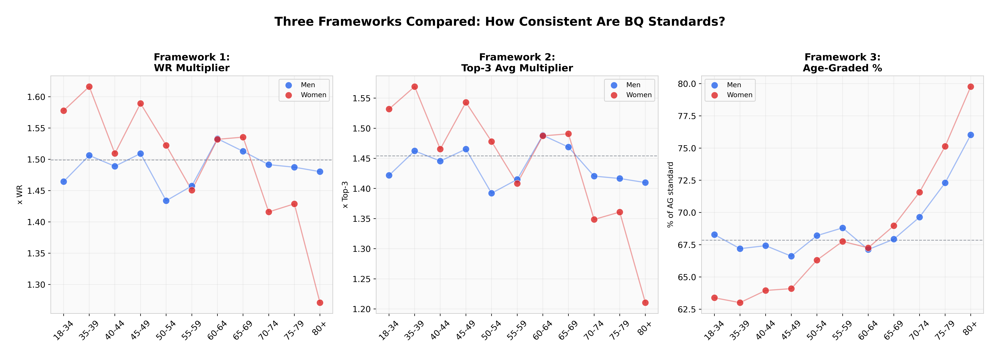
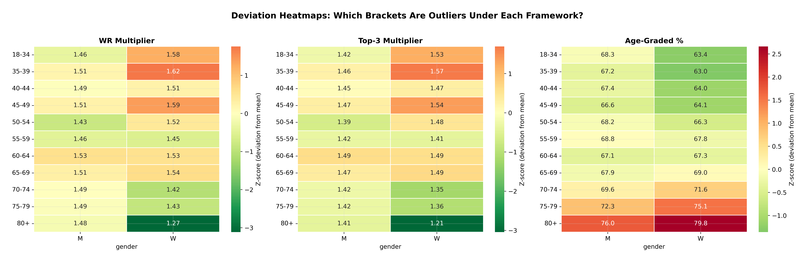
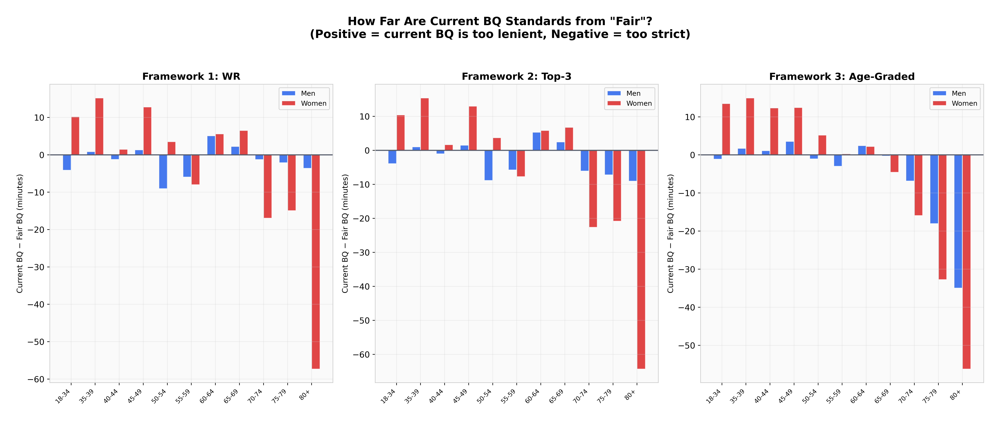
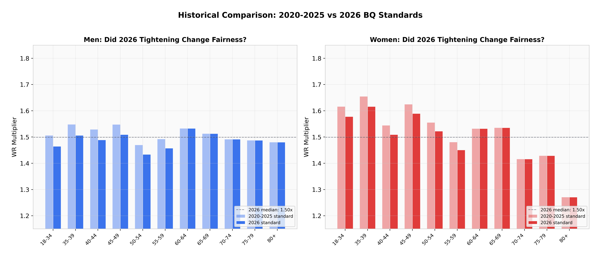
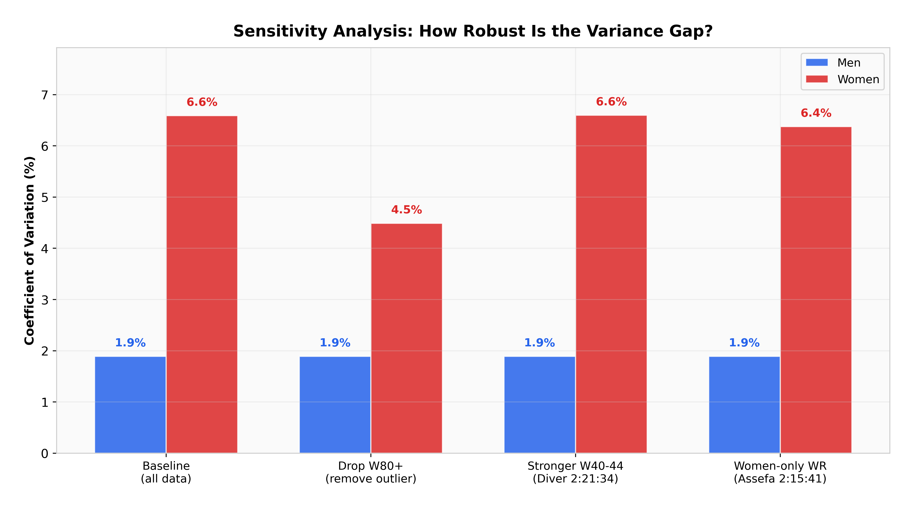
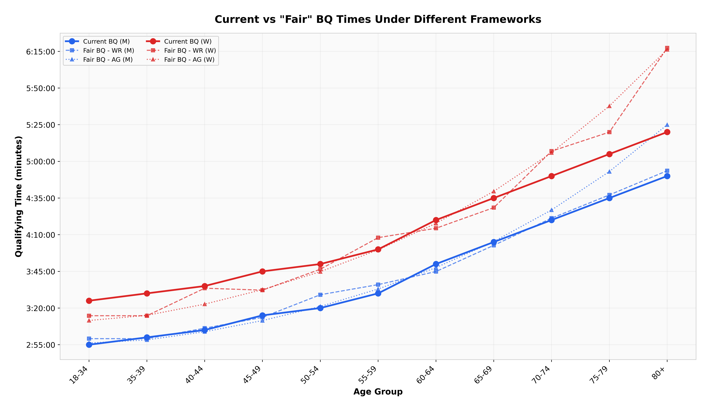

Boston Marathon qualifying times, 2026
The BAA sets a qualifying time for each of 22 age-gender brackets and has never published how. I scored every standard against three references: the bracket's world record, an averaged top three, and WMA age grading. Men and women are asked for the same average effort (Welch t-test, p = 0.81). The women's standards vary far more from bracket to bracket than the men's, and W80+ is about 57 minutes stricter than the rest of the table.
Welch t-test on the men's and women's mean world-record multiplier. Under age grading it is p = 0.68. No mean-level gap either way.
Coefficient of variation of the multiplier across brackets, men and women. Levene's test for equal variance: p = 0.036.
How much faster the W80+ standard (5:20:00) is than a uniform multiplier would set it (6:17:20). Age grading says 56 minutes.
Median standard across all 22 brackets: a BQ is typically half again as slow as that bracket's world record.
Start: the question
Boston is one of only two World Marathon Majors that you enter by running a qualifying time. The BAA publishes a standard for 11 age groups in each of two genders. Its announcements cite "careful analysis of results data" and stop there.
So "are they fair?" can only be answered by proxy. Pick a reference for how hard each bracket should be, then check whether every standard sits at the same distance from it. Any single reference is arguable, so I used three.
First result
Welch t-test on the gender means, world-record framework. t = −0.25.
Age grading gives the same answer. The men's standards ask for an average of 69.1% of age-graded potential and the women's for 68.3% (t = 0.42, p = 0.68). The usual forum complaint is about the mean, and on the mean the two genders are treated alike.

The result that holds
Every men's bracket falls between 1.43× and 1.53× its world record, a coefficient of variation of 1.9%. The women's run from 1.27× to 1.62×, a CV of 6.6%. Levene's test for equal variance gives W = 5.04, p = 0.036.
W35–39 at 1.62× is the most lenient bracket in the table and W80+ at 1.27× the strictest. Two women who both meet their standard can be running at very different fractions of what their age group has shown is possible.
The gap survives a change of reference. With an averaged top three, the CVs are 2.1% and 7.3%; with age grading, 4.0% and 7.8%. The ratio is about 3.5 to 1 under the two record-based frameworks and about 2 to 1 under age grading.


The outlier
The W80+ standard is 5:20:00. Applying the median multiplier would put it at 6:17:20, 57 minutes slower. Age grading puts the gap at 56 minutes. The two frameworks start from different premises and land a minute apart.
The reference explains it. Yoko Nakano's 4:11:45, run in Tokyo at 81, is an exceptional record, and the current standard asks women over 80 to finish within 27% of it. Every other bracket sits between 1.42× and 1.62× its record.


The 2026 tightening
For 2026 the BAA cut five minutes from every standard below age 60, its largest tightening since 1990, after 33,249 applications for about 24,000 qualifier places. The 60+ standards did not move.
A flat cut leaves the shape of the table in place. Against the same world records, the women's CV was 7.3% under the 2020–2025 standards and is 6.6% now; the men's moved from 1.8% to 1.9%. The change answered demand. It was too uniform to fix the spread.
It did make one step steeper. The jump from 55–59 to 60–64 was 15 minutes and is now 20, for men and women alike, so a qualifier gains 20 minutes of allowance on their 60th birthday.
data/bq_standards_2026.csv. The shaded band is the
55–59 to 60–64 step, 20 minutes in both lines since the 2026
cut (15 before it).

Stress test
I re-ran the world-record framework three ways: without W80+, with Sinead Diver's 2:21:34 as an alternative W40–44 reference, and with Tigst Assefa's women-only record of 2:15:41 in place of the mixed-race mark for W18–34.
The men's CV stays at 1.9% in every case. The women's is 6.6% with Diver and 6.4% with Assefa, and drops to 4.5% only when W80+ is removed. That one bracket accounts for about a third of the women's spread, and even without it the women's CV is more than twice the men's.


Limitations
There are 11 brackets per gender, so the tests are underpowered. Levene's p = 0.036 clears 0.05 by a small margin, and it was run on the world-record framework only. A p of 0.81 means no difference was detected, which is weaker than evidence of no difference.
The top-three framework is an approximation. The second and third marks are set at 3% and 6% slower than the record for brackets with depth, and 5% and 10% for 70+, rather than taken from results.
Below 40 there is no separate masters record, so 18–34 and 35–39 share the open record. That makes 35–39 look more lenient than it may be.
Non-binary athletes (110 accepted in 2026) are left out because the BAA says it does not yet have the data to set standards for the category. And "fair" here means equal proportional difficulty against a reference. The BAA may be aiming at field size, continuity or something else; a different definition could reach a different verdict on the same table.
Finish: sources and method
pip install -r requirements.txt then python src/analysis.py